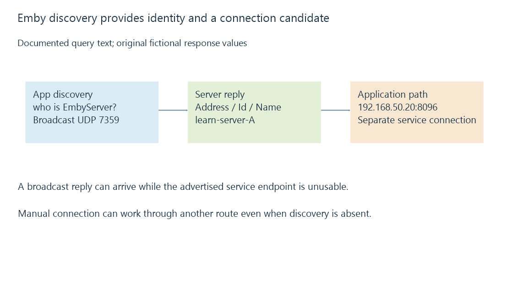

Emby server discovery and advertised endpoints
Emby’s documented local discovery exchange uses a UDP broadcast to find server identity and an advertised address, followed by a separate application connection.
An Emby app can discover a server locally without the user typing its address. The documented exchange asks a local UDP service for server information.
That information identifies a connection candidate. The client still needs to reach the advertised application endpoint.
The documented request is specific to Emby
Emby’s developer documentation specifies UDP port 7359 and the query text:
who is EmbyServer?
This is a distinct exchange from mDNS and SSDP. Opening their ports or receiving their descriptions does not make this query equivalent.
The broadcast belongs to the relevant local network context. A routed path to the server does not automatically forward the local broadcast across every subnet or VPN.
Identity and address have different jobs
The documented reply contains Address, Id and Name. This original projection uses fictional values:
{
"Address": "http://192.168.50.20:8096",
"Id": "learn-server-A",
"Name": "Harbour Library"
}
The address tells the app where it can attempt a connection. The ID identifies the server, while the name is a human label.

A name change need not be an address change. A DHCP change can alter the endpoint while the server identity stays the same.
Two servers can also have equal friendly names. Treating that label as the complete identity can select the wrong instance.
A reply can advertise an unusable address
A server with several interfaces can report an address suited to one network but not the receiving client’s realm.
Advertising loopback is a particularly clear error: a phone interprets that destination as its own local stack. Another case is an address on a VPN or isolated interface that the client cannot route to.
Emby’s local-address setting concerns the advertised endpoint. The chosen value needs to describe a reachable interface/service path for the intended clients; it does not create that route by itself.
Compare discovery and direct connection separately
| Observation | Useful interpretation |
|---|---|
| No discovery, manual endpoint works | Broadcast/reply/discovery processing may be the missing stage |
| Discovery works, endpoint connection fails | Candidate arrived; the advertised service path still failed |
| Correct endpoint, wrong server identity | The client selected another server or stale association |
| Correct server reached, user request rejected | Application access is a later stage |
These outcomes do not require changing a video codec or transcoding setting. They precede usable media delivery.
See Also
- UDP datagrams and application delivery policy
- Loopback addresses and the meaning of localhost
- SSDP discovery, advertisements and service locations
- Emby Connect and the path to the selected server